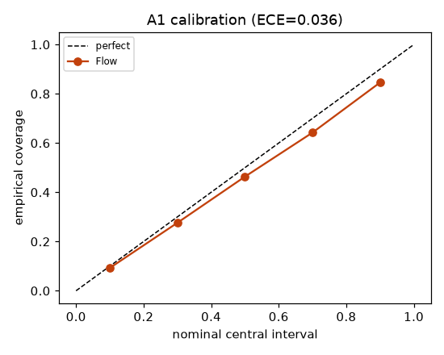
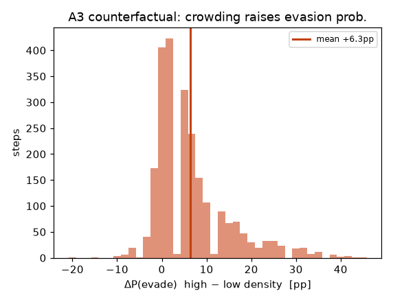
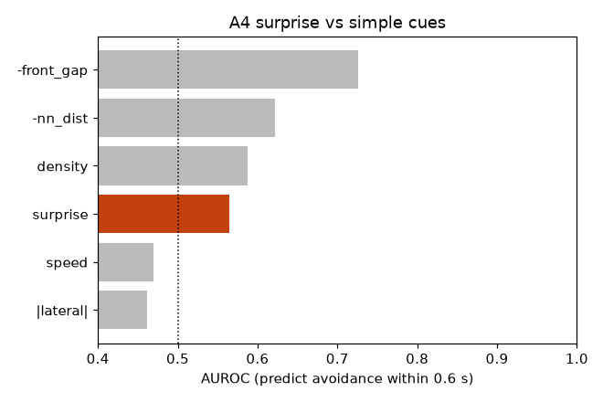
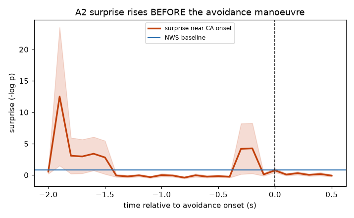
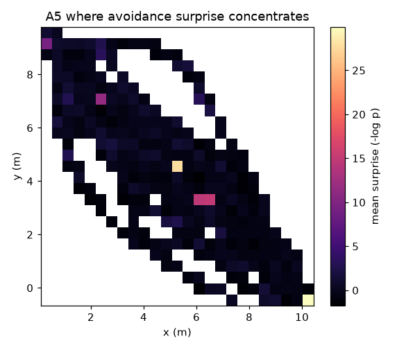
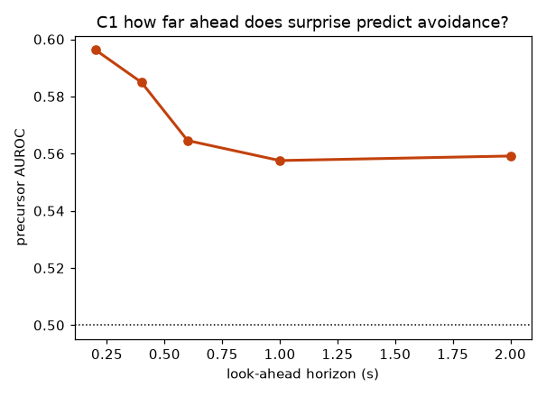

条件付きNFで歩行者の"いつもの動き"を学習。回避（人手ラベル）が起きる文脈を、較正確率・反実（混雑）・前触れ・幾何量との対決で多角的に読む。
A1 生成・較正：held-out で Flow NLL 0.39（Gaussian 2.73 / 等速 3.03 を大きく凌駕）、ECE=0.036で確率は信用できる。
A3 反実（混雑）：同じ局所文脈で密度水準を低→高に差し替えると回避確率が平均 +6.3pp上がり、|ΔP|>5pp が42.5%。生の回避率も密度で 0.25→0.34→0.41 と単調増。＝混雑が回避を因果的に押し上げることを校正確率で言える。
A2/A4 前触れ対決：ここが重要な発見。回避の0.6秒前を当てるAUROCは、サプライズ0.56に対し前方ギャップ(−front_gap)0.73・最近傍距離0.62の方が高い。つまりこの"日常的な回避"は幾何量でよく予測でき、尤度サプライズはほとんど先行しない（lead time 検出されず）。






条件付き Normalizing Flow（zuko NSF）で自動生成。NF×生活データ探索シリーズの一部。データ: Liu et al., Dryad doi:10.5061/dryad.c2fqz619v。